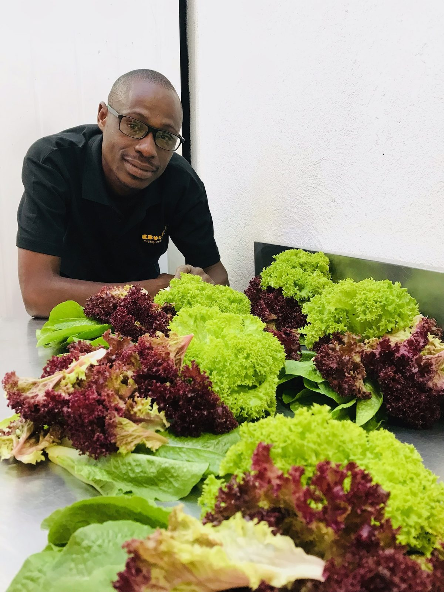
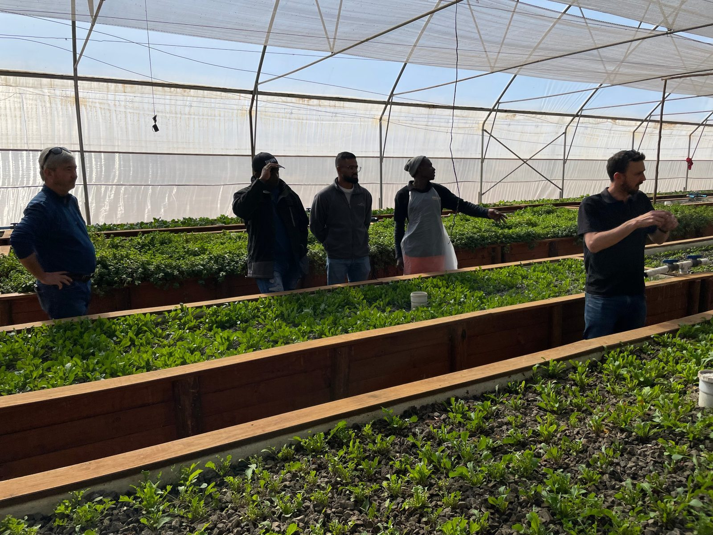

Ezulwini Africa (Pty) Ltd
A R20m raise to anchor a network of farmer-owned farms
13 November 2026 · Confidential
Ezulwini builds controlled-environment farms and runs them with local teams on one operating system, so each farm is commercially stable and investable from day one.
Summary and the raise
Ezulwini is raising R20m, blended debt and equity, to refit Hekpoort, finish its operating system and clear its bank debt. Dullstroom, a one-tunnel pilot, has traded for four years and made a farm-level profit of R337k in FY26. Hekpoort, a 50 ha farm Ezulwini already owns, becomes the anchor: at 70% of modelled output it earns R4.3m EBITDA per annum, enough to carry head office before any new farm is built. From there, each new four-tunnel farm earns head office a R1.2m setup margin once and a 6.5% service fee annually.
| Amount | R20m in three closes: R8.75m by 30 November 2026, R5.25m by 31 March 2027 and R6.0m by 30 June 2027 |
| Instrument | Convertible note in Ezulwini Africa (Pty) Ltd, 13% per annum fixed, paid in cash |
| Term | 4 years, with a company option to extend by 2 |
| Equity | Investors may convert up to half their principal at a R50m post-money cap. If half the round converts, partners hold about 20% |
| Coupons | Each close holds its own first year of coupons in reserve |
| Lead investor | Welcome to take a large part of the round and shape the final terms |
What, proof, opportunity
| What | A network of controlled-environment farms on one operating system: training, a farm app and data, back office and market access, with a route into ownership for first-generation farmers. |
| Proof | Dullstroom, a 1,000 sqm pilot, produces every week. FY26 revenue R1.44m and farm-level profit R337k (Xero, trusted), run by a local team of six trained on site. |
| Opportunity | Black farmers hold an estimated 5 to 10% of commercial production. New entrants fail on capital, buyers, systems and seasonal income at once. A farm that solves all four from day one is investable, and can be repeated. |

Steven Phoku, farm manager, Dullstroom.
Four barriers between a new farmer and a commercial farm
- Capital is out of reach. Lenders want collateral and a credit history new farmers do not have yet.
- No reliable route to market. Small volumes mean weak prices and no way in to premium buyers.
- No systems to run on. Without data or management tools, small farms run on guesswork.
- Income comes in seasons. Open-field harvests arrive in cycles, so cash swings through the year.
How Ezulwini works
Ezulwini first designs, builds and commissions each farm to one standard. Every farm then runs on the same operating system, held in one app and backed by trainers, farm visits and specialists from the Hekpoort hub.
Training
Three to six months hands-on at the hub farm, then refreshers.
System and data
Daily tasks, growth tracking and a live body of knowledge.
Back office
Accounts, people, inputs and compliance, run centrally.
Market access
Produce from every farm sold as one supply line.
The growing method is aquaponics in tunnels: fish feed the plants and the plants clean the water. It needs few outside inputs, harvests every week and works on marginal land. Leafy greens carry the returns; fish are left out of Hekpoort's forecast.
Who owns what
| Farm | Ownership | What head office earns |
|---|---|---|
| Dullstroom | 100%, a reporting unit inside Ezulwini Africa | All its earnings |
| Hekpoort | 100%, a division for now | All its earnings |
| Network farms | Co-owned: Ezulwini 26 to 40%, the farmer working towards 60%. Funded at farm level, through Ezulwini or direct from DFIs such as SEDFA and Land Bank | R1.2m setup margin once, 6.5% service fee annually, equity distributions (not in the forecast) |
| Partner farms | Funded by others, no Ezulwini equity | Service fee (not in the forecast) |
The repeatable unit
Dullstroom is one tunnel and proves the system. The unit Ezulwini repeats is four of those tunnels with one packhouse, one management team and one build. Figures are farm level, per annum, after the 6.5% fee to head office for the network farm and Hekpoort.
| Unit | Size | Revenue | EBITDA | Margin |
|---|---|---|---|---|
| Dullstroom pilot | 1 tunnel, 420 rafts | R1.44m | R272k | 19% |
| Network farm | 4 tunnels, 1,680 rafts | R7.65m | R2.46m | 32% |
| Hekpoort at 70% | About 2,100 rafts plus grow media | R10.46m | R4.31m | 41% |
| Hekpoort, full output | R14.95m | R7.61m | 51% |
Dullstroom revenue is the FY26 actual; its EBITDA is the model figure, which charges costs a stand-alone farm would carry (Xero shows R337k farm-level profit). A network farm costs about R15m to build, a full build with contingency; we expect to build under it. Its R1.2m setup margin pays head office to design the farm, oversee the build, train the team, implement the full management system and lead the operator through initial demand planning.
Hekpoort, the anchor
Hekpoort is the former Integrated Aquaculture farm, 50 ha in Gauteng, bought with tunnels, hatchery, packhouse and a water licence. The refit simplifies the system, adds solar and replaces liners: R4.5m in phase 1 and R2.2m in phase 2.
The plan allows four months of setup from first close, then three months of ramp-up at half output, with full production from month 8. Hekpoort and head office together turn cash positive in July 2027, before any new farm is built.
We lead with 70% of modelled output on purpose. The base case already cuts output by 10% in the first full year, takes grow media at 60% of modelled yield and leaves fish out of revenue.

Training in the tunnel. Hekpoort becomes the training hub for every new farmer.
Forecast to February 2031
Group means Dullstroom, Hekpoort and head office together. Financial years end in February; the year to February 2027 is the three months after first close.
| Year to February | 2027 | 2028 | 2029 | 2030 | 2031 |
|---|---|---|---|---|---|
| Network farms trading | 0 | 1 | 3 | 5 | 9 |
| Group revenue | R0.41m | R15.22m | R19.83m | R24.14m | R28.53m |
| Group EBITDA | -R1.01m | R4.40m | R6.02m | R9.04m | R12.47m |
| Coupons for the year | R0.28m | R2.29m | R2.61m | R2.60m | R2.32m |
| Coupon cover, base case | Reserve | 1.9x | 2.3x | 3.5x | 5.4x |
| Cover, Hekpoort at 70% | Reserve | 1.1x | 1.2x | 2.1x | 3.8x |
| Cover, no new farms built | Reserve | 0.9x | 1.4x | 1.6x | 2.3x |
| Cash built up, cumulative | - | R3.55m | R6.36m | R11.06m | R18.46m |
Each close holds its first year of coupons in reserve, so operations pay only R0.28m of coupons to February 2028. Setup margins on new builds are more than half of group EBITDA from February 2028, so cover depends on farms being built; the "no new farms" row shows the business without them. If Hekpoort runs at 70% and no farms are built, EBITDA does not cover the coupon.
Key assumptions
- New farm builds: 2 in each of the years to February 2028 and 2029, 4 in 2030 and 6 in 2031, earning setup margins of R2.4m, R2.4m, R4.8m and R7.2m. The planned pace rises to 10 builds per annum and 51 network farms by February 2036.
- Head office built role by role to 10 people by February 2031. Accounts, growth, people and tech come through N+1's Venture Engine at R65,000 per month.
- Tax estimated at 27%, before depreciation. Mid and full close dates are planning assumptions.
- Today (Xero, trusted): FY27 revenue to October was R0.88m over eight months and cash on 10 November 2026 was R0.89m. The whole company ran at a loss in FY26 and FY27 to date; the raise funds the step from one small farm to a commercial unit and a staffed head office.
Use of funds and what each close achieves
| Close | New money | Pays for | Achieves |
|---|---|---|---|
| First 30 Nov 2026 | R8.75m | Hekpoort refit phase 1 R4.50m, runway to breakeven R2.06m, year-one coupons R1.11m, existing investors R0.57m, GAP processing, costs | Hekpoort becomes a fully tested, cash-positive unit, and head office has a tested service it can sell and implement |
| Mid 31 Mar 2027 | R5.25m | Hekpoort refit phase 2 R2.20m, operating system and curriculum R1.25m, Dullstroom sales upgrades and sales team R0.85m, year-one coupons R0.68m, costs | Dullstroom and Hekpoort earn enough to run the whole business cash positive, with a full curriculum ready to build the farmer pipeline |
| Full 30 Jun 2027 | R6.00m | Absa term loan repaid R5.00m, releasing the director's guarantee; year-one coupons R0.78m; new farm and market development R0.04m; costs | Hekpoort is free of bank debt and anchors the first network farms. Two builds start in the year to February 2028 |
| Total | R20.00m |
Below the first close no capital is drawn and the refit does not start. A board resolution and an investor deployment statement go out at each close.
Your position and repayment
| On a R500,000 note | Amount |
|---|---|
| Coupon, per annum | R65,000 |
| Coupons over four years | R260,000 |
| Principal repaid | R500,000 |
| Cash back, held as debt | R760,000 |
| Converting half at the R50m cap | 0.5% of Ezulwini |
Minimum ticket R500,000. Coupons stop on any converted portion.
How the R20m is repaid
The base case builds up R18.5m of cash by February 2031 against R20m of principal, due from November 2030 to June 2031. Investors may convert up to R10m. Any gap is met by the two-year extension or by refinancing against Hekpoort, which carries no bank debt once the Absa loan is repaid at full close.
Risks and answers
People
| Lliam Roach | CEO, founder and builder. A machining and engineering background; designed and built Dullstroom. LinkedIn |
| Mitch Marescia | Director and backer. An entrepreneur focused on enterprise development in rural communities. LinkedIn |
| Matt Beckett | Commercial and strategic direction, finance and structure. Leads N+1, an early investor. LinkedIn |
| Steven Phoku | Farm manager. Started as a day labourer on the first earthworks; now runs Dullstroom, and is next in line to become a shareholder and train other farmers. |
| N+1 | N+1 Impact Venture Partners is a seed investor that has backed Ezulwini's growth and runway. It has partnered on commercial planning and systems development, and will provide and co-build the back office. np1.co.za |
Annex: indicative terms
Indicative only and not an offer of securities. To be reviewed by a South African corporate lawyer and accountant before any term is agreed.
| Term | Proposed |
|---|---|
| Issuer | Ezulwini Africa (Pty) Ltd, 2013/118031/07 |
| Instrument | Convertible note |
| Coupon | 13% per annum, fixed, paid in cash; payment dates set in the note agreement |
| Term | 4 years from each close; company option to extend by 2 years on the same terms |
| Equity option | Investor may convert up to 50% of principal into Class C ordinary shares before maturity, at a R50m post-money cap |
| Redemption | Cash at maturity. Converts only if cash redemption would put the company's solvency at risk |
| Closes | First R8.75m by 30 November 2026 (cancelled if not met by 15 December 2026); mid R5.25m by 31 March 2027; full R6.0m by 30 June 2027 |
| Minimum ticket | R500,000 |
| Information | Quarterly management accounts, annual financial statements, annual investor meeting |
| Lead investor | Ezulwini is open to a lead investor's term sheet where it suits the business |